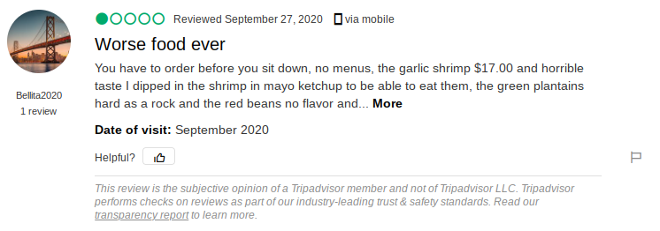
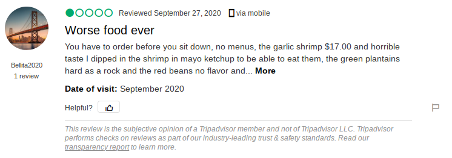

The project's main aim is to use a bag of words model to pre-process the textual data (Data that is segregated into two categories: positive or negative restaurant reviews), and then train and test a naive bayes model (In this case, multinomialNB) to achieve a good accuracy score (90.56% accuracy was achieved in the end).
The main purpose of this project is to package a heart disease predictor model's classification capabilities and distribute it to a userbase. First, a randomforestclassifier model is trained on a kaggle dataset and achieves an accuracy of 86.7%. Further, the web application's backend is created using the python framework known as flask. Then the front end is created using bootstrap CSS and HTML. A SQLite database is used throughout to store the user's username and password.